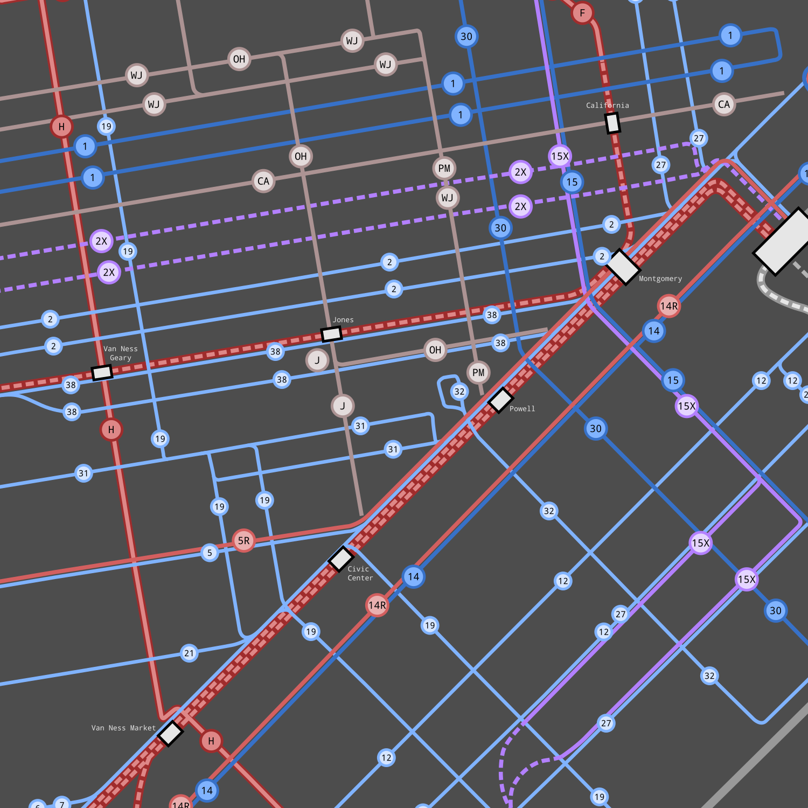
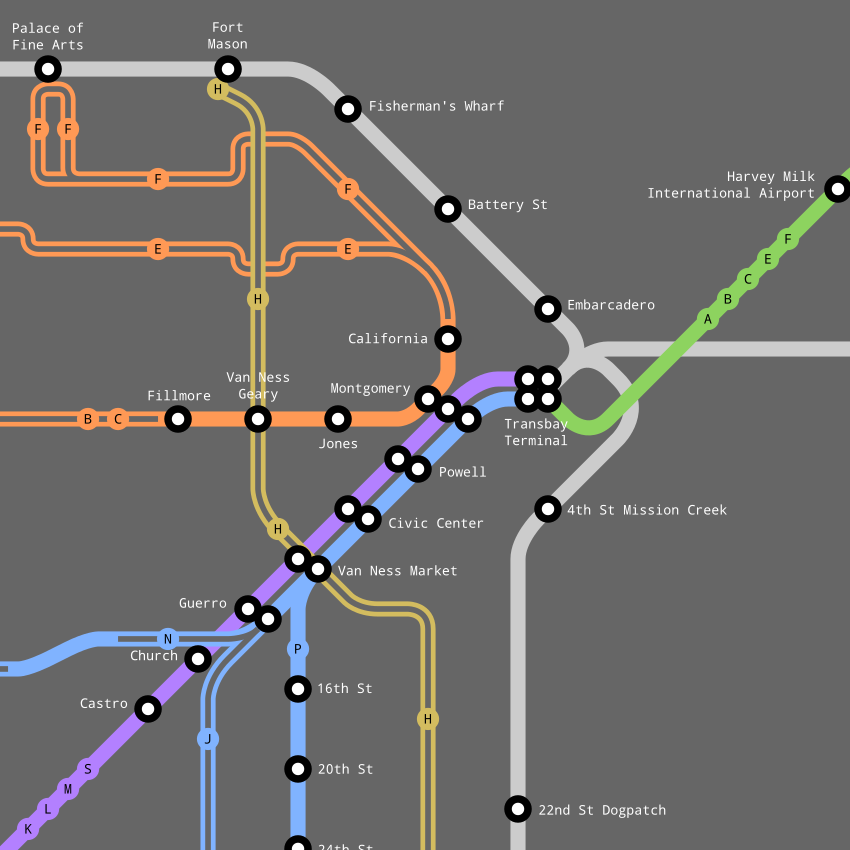
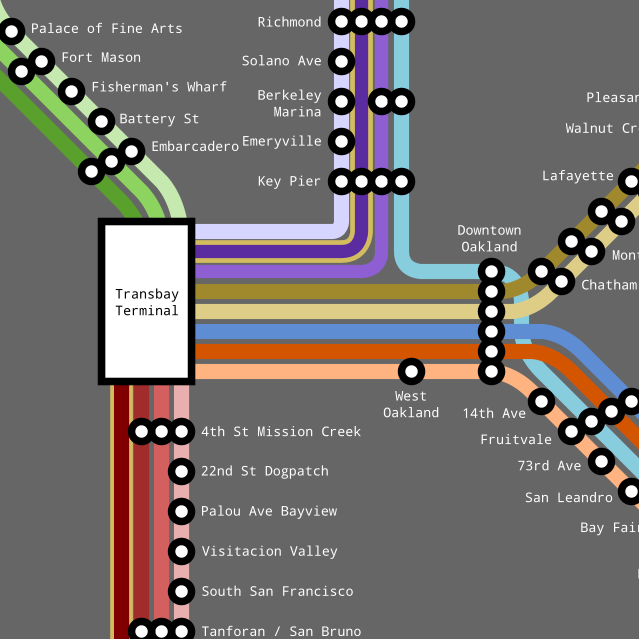

San Francisco & East Bay Municipal Railway Maps
|  |  |
| to-scale SF transit | to-scale East Bay transit |
|  |  |
| Muni light rail map | Bay Area commuter rail map |
{kind=link}
{kind=link}
{kind=link}
This 4-map collection depicts an alternate universe of Bay Area public transportation.
Inspired by a Market Street Railway article, the premise of this alternate history is that the Market/Geary/Mission streetcar-subway trifecta was constructed in 1937, when it was placed on the ballot.

This proposal would have constructed three subways: - The Geary St subway, running from Fillmore towards Market, turning north at Montgomery and running underground til around Sacramento St; the E/F and B/C are interlined through this subway - The Market St subway, going underground at Valencia, running down Market until it turns south to meet the Transbay Terminal. - The Mission St subway, branching from the Market subway at Van Ness and emerging onto the surface a little past 30th/Mission.
The maps in this collection extrapolate this world forward to the present.
In short:
- The cable cars are preserved as they existed in 1954, instead of being cut in half as in our universe.
- The Key System is municipalized while still intact, and merged with the SFMR (San Francisco Municipal Railway) to create the SF&EBMR (San Francisco & East Bay Municipal Railway); the transbay streetcars are preserved.
- The H Potrero, by some miracle, survives the purges intact, despite being a crosstown line without grade-separated rights of way.
- In the mid 60s, to alleviate streetcar congestion, the Market subway is deepened, and another set of tracks is built below the original. These tracks are extended to meet the Twin Peaks tunnel, the KLM are rerouted to use it; the JNP continue to run in the original level, which continues to emerge onto the street at Valencia.
- BART does NOT get built; the vote for a modern rapid transit system fails because Muni/Key exist, and people don’t see a need.
- In the 90s, California pours large amounts of funding into intercity and commuter rail construction; the result is a robust commuter rail network that perfectly complements the inner-bay streetcar network.
- Minor tweaks over time to the streetcar network, slightly extending the F/K/M (SF) and F (East Bay).
- The operational characteristics of the bus network is fairly underspecified in these maps, but in my head I picture we have East Bay trolleybuses on the legacy local Key streetcars, tentatively the 1/3/4R/5/6/9/11/18.
It may be a little utopian, but can’t a girl fantasize about the what-could-have-been? It’s grounded in an interesting historical what-if :)